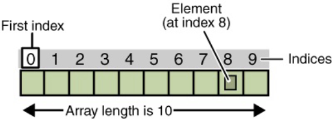
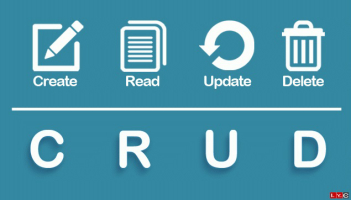
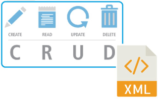
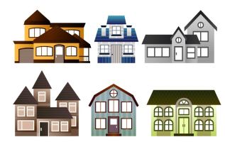
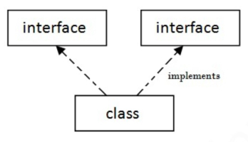
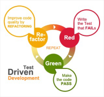

1: IntelliJ and Basic I/O
IntelliJ · Java Virtual Machine (JVM) · main method · Scanner · OO recap
2: Primitive Arrays

primitive arrays · basic menu driven systems
3: ArrayLists

Collections · Generic Classes · ArrayList · loops · for each loop · algorithms for collections
4: Menu Driven Apps and Persistence

Switch · Loops · Menus · persistence · CRUD · debugging
5: Persistence (XML & Exceptions)

Streaming · XML · Exception Handling · Validate User Input · Static · JavaDoc · ShopV5.0 · DVD3.0
6: Collections (Map and Set)

Collections · Map · Set · Tech Support App
7: Inheritance and Polymorphism

Inheritance · is-a relationship · Polymorphism (many shapes!) · Overriding
8: Abstraction

Social Network app · Abstraction · Inheritance Hierarchy
9: Interfaces

Abstraction · Deadly Diamond of Death · Interfaces · Implementing Interfaces · Social Network App
10: TDD and JUnit

Test Driven Development (TDD) · JUnit · Test Classes · Annotations · Automating Tests